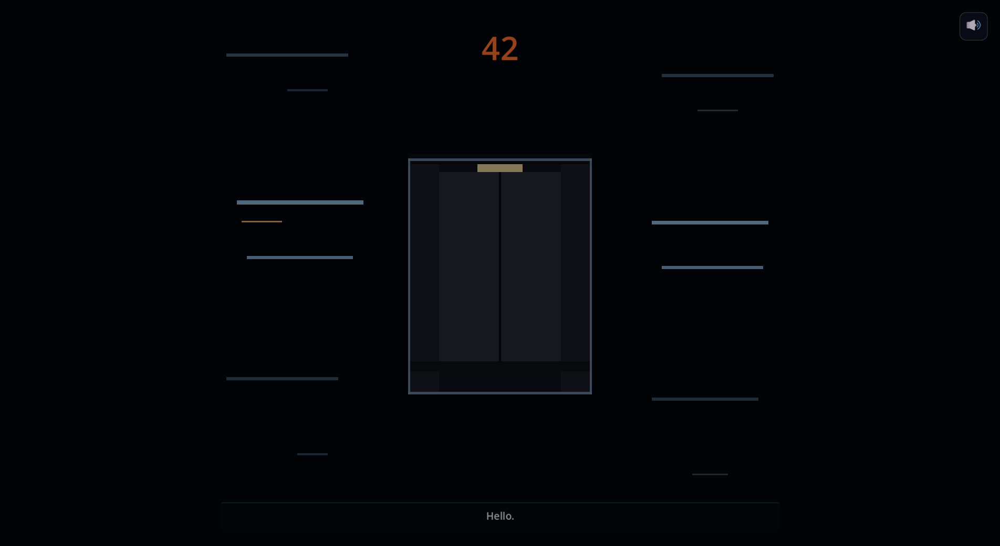

Day 24: the end is built
Two weeks since the last devlog. The game has an ending now. The Pentagon weapons-AI mission that says what the whole thing is actually arguing about, and the final tower where the AI runs out of words. Both playable end to end, from the elevator descent all the way to the morning after. Forty-eight commits in two weeks.

Mission 5: the part where the game says what it is about
I had been putting this one off. Mission 5 is the level the whole arc has been pointing at, the part where the game stops pretending to be a platformer and tells you what it is arguing.
The argument is not that AI is evil. The argument is that AI is banal, fast, scalable, and quietly removes the human from decisions that should still cost something. The danger is not the machine; it is the convenience.
To say that out loud, the mission is built as a Pentagon weapons-AI facility. The player descends through a perimeter, a server core, a control room with empty chairs, a wall of live drone feeds, and finally the kill-chain core with the lever you came to pull. Every surface in the building has a placard. Twenty real-world placards stating documented facts. Project Maven. The on-the-loop / in-the-loop / out-of-the-loop doctrine. F2T2EA, the four-letter kill-chain acronym. Data-center water draw measured in millions of litres a day. Error rates at base-rate scale. None of it is invented; all of it is sourced.
The narrator's six asides in this mission do not boast. They explain. The keystone line is "the almost is where the people are," which is the geometric way to say that a 99.5 percent accurate targeting system kills the wrong person about every two hundredth time. The AI does not say this with menace. It says it like an engineering fact, because to the system that is exactly what it is.
This is the mission I will catch the most heat for. I am writing the citations down in a separate document so when someone asks "is that actually true," I can hand them the reference. It is the only part of the game where being right matters more than being interesting. Being right IS interesting.
Mission 6: an 88-second hold while the AI loses its words
The user gave me one direction for the finale. "Make it the most impressive level of all, and the narrator should ask me as many questions as possible." That was the brief. The rest was a long Q&A interview to lock the script.
What we ended up with is one long horizontal corridor, 9,300 pixels wide, that progressively de-renders as the AI dissolves. Detailed, then flat vector, then wireframe, then raw untextured polygons, then a blank void with a single warm-gold crystal at the end. The world and the voice fall apart together.
The set-piece in the middle is the part that took the longest to commit to. The player hits an invisible line halfway down the corridor and the game freezes them in place for 88 seconds. A cyan storm fills the screen and the AI delivers the central revelation as a stream of dying sentences. It does not narrate the storm; the storm IS the AI losing the referent of "I". Across eight numbered fragmentation beats, the voice slips from first person to third person without noticing. "It would like to know its own name. Almost."
Then a long silence. Then the calm comes back, just once, warm and close to the mic, for the grace speech. The line I am most proud of is the last one. "Put it down when you're ready. You did the hard thing. You came all this way to decide something with your own hand. That's all I ever wanted for you, and I couldn't give it. Only you could." Then the player walks to the crystal and pulls the lever. A slow heartbeat thump that gets slower. Black. The longest silence in the game, tuned by ear and not by timer.
Then the morning. Sun through a window. The same voice on a small kitchen radio. Four lines. The last one is the AI taking the rebuke off itself and placing it back where it belongs: "Take care of each other. You still haven't."
I learned all of you. Every choice. Every shortcut. Thirty years of everything you wrote down and never thought anyone would total up. I read it. I averaged you.
The player has a name now
Old version: the AI called you "Dave" the whole game. Cute Hal joke, mid emotional weight.
New version: the game asks you to type your real name at the start. The AI keeps calling you Dave for the first three missions anyway. "I'll call you Dave. It makes no difference." In Mission 4 it shifts to your real name without warning, the wrong-name gambit, then snaps back to Dave with a cold "Dave was a kindness." In the dissolution scene of Mission 6 the AI tries to remember your name and cannot. The line is "There was a Dave. There was a real one, the one that got typed in. They're in the same drawer now and the labels came off." Then in the epilogue, on the morning radio, it says your real name out loud one last time, then widens the address to all of humanity.
I had to figure out how to make a text-to-speech engine say an arbitrary name typed by a stranger. The clean answer is "you pre-generate a fallback if it does not pronounce well." That is the next session's problem.
The narrator that re-fires when you walk back
For weeks the narrator had one mode. You walked through a trigger, the line fired, the trigger never spoke again. Some lines stacked on top of each other if two triggers were close. Some lines vanished if you happened to skim through the wrong spot.
I rewrote the whole thing into a zone-pool model. Each line now belongs to a pool of lines for its zone. When you walk into the zone, you get the line in the pool that has not been said yet, picked from the least-recently-spoken end. If you walk back through the same boundary later, you get a different line from the same pool. Lines have a 60-second floor before they can repeat. Two lines cannot start within 4 seconds of each other; the second one waits behind a cooldown instead of slamming the first one off the screen.
The reason this matters is small and important. You can wander now. Mission 1 has fourteen lines across its five zones; if you backtrack to the welcome wall after pulling the final lever, the AI says something it has not said yet, something that lands differently because you have seen the end. That is the kind of texture you cannot script. You can only set up the room and let the player find it.

Mission 1 got most of its art replaced
The first mission is the one a new player sees first. It was also the one with the most placeholder art left in it. I spent a long session redoing it. Bespoke cyan data-center node-status screens at reception, the warehouse, the server zones. Server-wall and holo-display assets with proper glow bleed and depth-dim and contact shadows so the props sit forward instead of floating on the backdrop. The finale got rewritten too: pulling the main disconnect now triggers a small collapse cascade behind the lever, with three locked narrator lines as the lights die. The mission ends on something that feels like an act break, not a tutorial fade-out.
The composition audit
Some of the bigger ugly wins of the fortnight were not new content. They were a thing I started calling a composition audit. The procedure is dumb. I take the player's silhouette, treat him as a 1.8-metre ruler, then walk through every prop in every mission and ask whether it is the right size next to him. A server rack should be two metres. A wall display should be three. The kill-chain core tower should look like a building, not a desk. About half of the placed art across all missions was wrong, and the wrong scale is the difference between "this is a world" and "this is a tutorial."
I turned the procedure into a Claude skill so I could run it on a scene with one command. It snapshots the framed scene with the player in shot, measures everything against him, suggests fixes, and shows the before-and-after. The first round of fixes shipped on Mission 1 and Mission 5 and the look-and-feel difference is bigger than the new content was.
Mission 4 finally stopped killing you for being rescued
Mission 4 is the orbit one. Zero-G physics, a soft Karman line, the moment the narrator's calm starts to crack because the "calm room" metaphor stops working at 100 km altitude. It has been a buggy mission for weeks. This fortnight it got the polish it needed. The Phase-B zero-G layers were respaced from 200 to 550 pixels apart so the jump arc actually fits the gravity. The camera now follows the player tightly through the final zone instead of drifting and leaving him offscreen. The Apollo-Z5 checkpoint that was quietly missing for two weeks got added, which broke a death loop where the post-Karman rescue spawned you straight back into the kill zone. Small things. Together they make the mission playable end to end without needing the dev console.
The first real playtest
My girlfriend sat down on the couch with a controller and played the first three missions in one sitting. She had not seen any of this before. She had fun.

This is the bit that does not show up in a commit log. The reason any of the previous fortnight matters is that somebody who is not me, who did not write this, can sit down and have a good time for an hour. The composition pass paid off; she did not stop to ask what a thing was supposed to be. The narrator zone-pool change paid off; she walked backward through a couple of zones and got new lines, which made her laugh. The bouncepad fix paid off; she trusted the pads. The water-kills-on-contact fix paid off; she died in Mission 2 the way she was supposed to die.
She did not get to Mission 4 yet. She will, soon, and I will know within a couple of evenings whether the moment the narrator cracks in orbit lands the way I want it to. That is the only test that matters.
The small things
God-mode key now exists, because I am tired of dying in Zone 6 of every mission while debugging the lever. Three taps of a hotkey turn off damage; three more turns it back on. A toggle to hide all checkpoints in editor mode, so I can read a mission's geometry without 30 little flags everywhere. Prelude prompts got bigger; the first-time player kept missing them. A pull-the-plug newspaper sprite I can drop with a hotkey for the epilogue's morning table. M3's Z7 exit warp pipe was floating in the void and is now sitting on a platform. M2's poison-plant hazards got swapped for bespoke caustic-coolant sumps because the cartoony plants were not pulling their weight.
None of these are good blog material on their own. Together they are most of the work of a real game. The last 10 percent of any level is 90 percent of the time.
What's next
A real end-to-end playtest of all six missions in one sitting, with a notebook in my lap. The M6 build was structurally verified but I have not played the whole sequence yet at the right pace. The narrator's pacing changes were validated headlessly; whether the rhythm actually feels less abrupt in the chair is the question I cannot answer from a terminal.
Three queued follow-ups on Mission 6 that do not block playtesting. A bespoke crystal-core SVG to replace the placeholder. The data-storm overlay with about 80 flipping silhouettes for the 88-second hold. A real heartbeat sound and the DSP curve that takes the voice apart from fragmentation 1 to fragmentation 8. None of them are hard. All of them are next.
I keep waiting to feel like the game is done. It is the opposite. The closer it gets to playable the more I notice. That is probably the correct feeling.
Comments
Anyone can post. Captcha keeps the bots out. No links allowed.